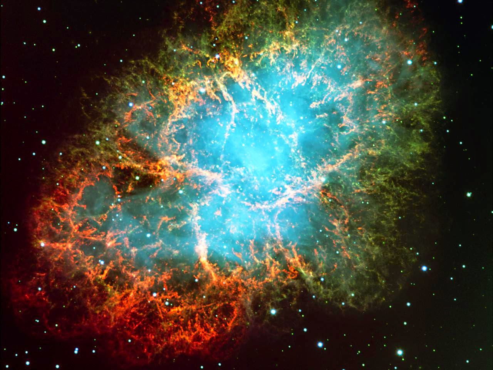

A Nebulosa do Caranguejo (também catalogado como Messier 1, NGC 1952, Taurus A) é um remanescente de supernova e uma nebulosa de vento de pulsar na constelação do Touro. A nebulosa foi primeiramente observada por John Bevis em 1731 e corresponde a uma brilhante supernova (SN 1054) registrada por astrônomos chineses e árabes em 1054. A nebulosa é a mais intensa fonte de raios X e gama para energias acima de 30 KeV, com fluxo de energia luminosa acima de 1012 eV. Dista a cerca de 6 500 anos-luz (2 quiloparsecs) da Terra e tem um diâmetro de 11 anos-luz (3,4 parsecs), expandindo-se a uma taxa de aproximadamente 1 500 quilômetros por segundo.

Os pilares da criação são aglomerados de poeira e gás com tamanho interestelar na nebulosa da Águia, situado a cerca de 6.500-7.000 anos-luz da Terra.[1] No nome, "pilares" é sugestivo ao formato do lugar, e a parte "Criação" originou-se devido ao local ser um enorme berço de estrelas. Sua primeira imagem, datada em 1 de abril de 1995, foi tirada pelo telescópio espacial Hubble. Os pilares são, basicamente, compostos de hidrogênio molecular, que tem sido, além de vitais para o nascimento de novas estrelas, erodido por foto-evaporação, devido à forte exposição à luz violeta gerada à estrelas tecnicamente próximas.[3] Conforme isso vai acontecendo, pequenos globos de gases dentro da nuvem são expostos